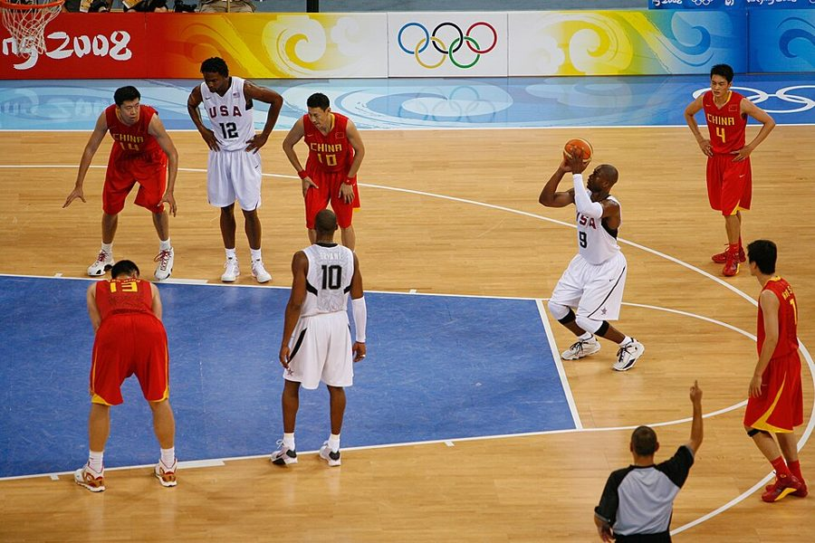

Winter Is Coming
… a “Winter Is Coming” kind of difficult …
（《权力的游戏》里的）凛冬将至
美剧《权力的游戏》里史塔克家族的家训，意思是苦日子要来了。她借它说复工之难不是一般的难。
前四章讲怎么带别人，这一章把镜头转向经理自己：心虚、短处、情绪，谁来管？作者从生完孩子回来、乱成一团的那几周讲起：她请来的教练先不救火，先交给她一份同事眼里的她。接着是冒名顶替感、给自己列长处和短处、找出让自己上火的事，再到跌进谷底时怎么爬出来，最后是怎样一直进步。读的时候抓两条线：先看清自己再谈改；看清自己要靠别人告诉你。这是全书最像朋友掏心话的一章，她出丑的地方写得很坦白。
第 4 章讲怎样给下属反馈，这一章转过来管经理自己：怎样向别人要反馈，怎样对付心里的怀疑。作者在 §5 明说了这层接续：上一章整章讲给下属反馈，那么自我提升的秘方就是一直向别人要反馈。这一章会用到第 4 章的任务反馈、行为反馈和 360 度反馈，可以对照着读。下一章回到团队，讲怎样开好会。
§2 作者转述 Carol Dweck 的说法：固定心态和成长心态对表现影响巨大。2019 年以后这一点争议很大，几项大型元分析发现，教人成长心态的干预平均效果很小，有的说几乎测不出。当成面对挫折的一种态度可以，别当成已被证明的提效工具，详见「今天怎么看」。
经理自己的心虚、短处和情绪，谁来管？怎么管？
读的时候带着这几个问题。不用先找答案，读完回来对照「检查一下理解」。
这一章的每一节一条，按原书顺序。粗体是本站给的节名，后面是档和英文词数；下面一行是原书小标题、纸书页码和这一节开头几个英文词；再下面是译本的小標題和开头几个字，在译本电子书里搜它就能跳过去。每节标了档：「先读」是这一章的骨架，「有空」例子更多、讲得更细，跳过不丢线。读完打个勾。
先把这一章用到、作者默认你懂的几个概念讲一遍。讲的是概念本身和它在管理界的来历，作者拿它推出什么，读原书时自己看。
公司花钱请来、一对一帮经理提高工作表现的外部顾问，通常签几个月的约，定期见面。和两种人要分开：导师（mentor）多是公司里更资深的人，凭自己的经验给建议，一般不收钱；心理咨询师处理情绪和心理问题。高管教练只管工作上的表现和行为，碰到抑郁、焦虑这类问题，按行规应该转介给专业人员。
常见的开头是一轮访谈式的360 度反馈：教练私下访谈你的上司、同事和下属，整理成报告，再和你一起定要改的一两件事。好的教练很少直接给答案，多是提问，让你自己想清楚。美国大公司多给高层配教练，普通新经理较少有这个待遇。
在这一章：§0 作者的教练先访谈同事、交给她一份二十页的报告；§5 最后一个小标题讲公司不出钱时，自己掏钱请教练值不值。
1978 年，心理学家 Pauline Clance 和 Suzanne Imes 发表论文，描述她们在一批成就很高的女性身上看到的现象：明明有成绩，却认定是运气、是别人看走了眼，总担心哪天被「揭穿」。她们叫它 imposter phenomenon（冒名顶替现象），说的是一种体验，不是病。后来流行「综合征」的叫法，但它不是医学诊断，精神疾病的诊断手册里没有这一条。这个词拼作 impostor 或 imposter 都可以，两种都通行。
后来的研究发现男性也常有。2020 年一篇汇总 62 项研究的综述里，各研究测出的比例从 9% 到 82% 不等，差距大多来自用的量表和划线不同。容易混的是「真不会」：冒名顶替感是有证据也不信自己行；确实缺一项本事，那是该补的课，两件事要分开看。
在这一章：§1 讲它是什么、为什么找上经理；§2 作者说它让自己多年不敢要反馈；§4 的「谷底」是它最重的时候。
斯坦福心理学家 Carol Dweck 的说法。她从 1970 年代起研究孩子怎样面对失败，发现关键在人怎么看能力：认为聪明是天生的定量（固定心态），失败就像被宣判，于是躲开难题；认为能力能练出来（成长心态），失败只是信息，于是愿意试。2006 年她把研究写成通俗书《Mindset》，在学校和公司里传得很广。
两点常被误解。成长心态不是「乐观」，也不是「多夸人努力」，Dweck 2015 年专门撰文批评过这种「假成长心态」；它也不是非此即彼，她说每个人都是两种心态的混合，碰到不同的事会切换。它到底管不管用，见「今天怎么看」。
在这一章：§2 作者说自己换了心态才敢要批评，后面有四组情境对照两种心态；§4、§5 讲的办法都默认你已换过来。
认知行为疗法的一个基本想法：让人难受的常常不是事情本身，而是我们对它的解读。1950、60 年代 Albert Ellis 和 Aaron Beck 各自发展出这一套，Ellis 的 ABC 模型把它拆成三步：发生的事（A），你的想法（B），情绪和反应（C）。改了 B，C 就跟着变。情绪心理学家 James Gross 把换一种解读的做法叫「认知重评」，研究发现它比硬压情绪副作用小。
常见的想法陷阱有：读心术（我知道他看不起我）、灾难化（这下全完了）、以偏概全。「我脑子里的故事」是作者的说法，意思相同；她在引言里推崇的沟通课程《关键对话》也讲「管住自己的故事」。
在这一章：§4 第二个小标题就是这个意思：先怀疑自己编的故事，再去问清楚。§2 的「校准」是同一件事用在看自己上。
以后带人碰到这些事，从这里查。每张卡先说动手前要想清楚什么，再用本站的话转述作者的办法（不照抄原书的清单），然后是书外的补充和最容易犯的错，最后指回书里讲它的那一节和纸书页码。全书的情境卡汇总在情境卡。
书里：Everybody Feels Like an Imposter Sometimes，纸书 p.109–111
书里：Understand Yourself at Your Best and Worst，纸书 p.120–122
书里：Finding Your Confidence When You’re in the Pit，纸书 p.122–130
书里：Practice Self-Care by Establishing Boundaries，纸书 p.129–130
书里：Learning to Be Twice as Good，纸书 p.130–138
读英文纸书可能卡住的地方，按原书顺序分节排。灰色斜体是原文里连续的几个词，后面是纸书页码，翻书找得到；标「每个字都认识」的，是每个词都眼熟、合起来意思却变了的，最容易读错。点「记下」收进词本。
按在书里出现的顺序排，标题前是节号。只讲到读懂这一章需要的程度。作者的教练 Stacy McCarthy、上司 Chris 和书里的同事都是普通人，这里不另作介绍。
作者引的那段话出自 Hill 2007 年在《哈佛商业评论》上的文章《Becoming the Boss》（书后注释有出处）：去问任何新经理当上司的头几天，只要对方说实话，听到的都是晕头转向的故事。这篇文章讲的是新经理对这份工作常有的几个误解，比如以为当了上司就有了权威和自由。作者借她的话说明：心虚的不只你一个。
作者推荐的两本书都出自盖洛普（Gallup）一系。《StrengthsFinder 2.0》（Tom Rath，2007）附一个在线测评，从 34 个「才干主题」里挑出你最突出的五个，这套测评今天叫 CliftonStrengths，以盖洛普的心理学家 Don Clifton 命名。《StandOut》（2011）的作者 Marcus Buckingham 在盖洛普工作过多年。两本都是「发挥长处、别死补短板」这一派的产物，这个思路的来历和争议见第 3 章的发挥长处。
作者在括号里提到的达克效应（Dunning-Kruger effect），来自 1999 年康奈尔大学的 Justin Kruger 和 David Dunning：在幽默感、逻辑推理和语法几项测验里，得分最低的那组学生大大高估了自己的排名。网上流传的那条先冲上「愚昧山峰」再跌下来的曲线，不是论文里的图。2002 年起就有学者认为，这个结果有一部分是统计上的回归效应，Dunning 本人做过回应，争论至今没有完全平息。作者只用了它最基本的意思：本事不够的人容易高估自己，所以要请别人帮你校准。
《Mindset》2006 年出版，中文简体版叫《终身成长》。书在教育界影响最大，很多学校把「成长心态」写进课程；企业界也爱用，微软 CEO Satya Nadella 常说他用这本书的思路改造公司文化。作者在 §2 借她的两种心态解释自己为什么多年不敢要反馈。这个研究后来的争议见「今天怎么看」。

作者说的想象练习，体育心理学叫 mental practice 或 imagery：不动身体，只在脑子里一遍遍过动作。她讲的篮球罚球实验流传很广，书后注释指向澳大利亚心理学家 Alan Richardson 1967 年的一篇综述。健身那组数字，注释写的是 Yue 和 Cole 1992 年的实验，但数字和那项实验对不上，见「今天怎么看」。Jack Nicklaus（1940 年生）是美国高尔夫名将，拿过 18 个大满贯赛冠军；作者引的那句话出自他的教学书《Golf My Way》。
这一章两次提到她：§4 说她在书里承认，怕同事怎么看，下午五点下班要趁没人注意溜出大楼；§5 引她的建议，别问人「你愿意当我的导师吗」，要请人帮具体的忙。Lean In Circle 是这本书带起来的互助小组，一小群人定期聚会，聊工作和生活里的难处；作者在公司里组过一个。同一处提到的 Reese Witherspoon 是美国演员，作者引的是她在 Lean In 网站上讲的自己的故事。
她和 Steven Kramer 2011 年出版《The Progress Principle》，依据 238 名员工写的约 1.2 万篇工作日记：一天里最能提振情绪和干劲的，是在有意义的工作上往前走了一步，哪怕只是一小步。作者在「划边界」那里引了她讲压力和创造力的一句话。本站看，作者的「小胜利」日志和 Amabile 的发现是一路的：把每天的小进展看见、记下来。
对着译本读这一章时，下面这些地方会把人读歪。方框里是译本的原句，在译本电子书里搜它就能找到；灰色斜体是英文原文那一处，后面是纸书页码。只收意思错了、反了、漏了的，措辞上的出入不收。全书的勘误汇总在译本勘误。
… One’s strategic prowess is so strong …
译本：「B英勇非凡，我覺得他上輩子一定是五星級上將」
原文说这位同事的战略能力强到作者觉得他上辈子是五星上将，比的是运筹帷幄，不是勇敢。三位同事各有一项本事：把复杂的事化成好记的框架、战略、同时推进二十件事。
… people who aren’t actually very skilled …
译本：「描述這種自我感覺良好的人」
原文的定义是：本事其实不怎么样的人，容易以为自己比实际更强。译本只剩「自我感觉良好」，丢了「本事不够」这个关键条件，读起来像在说所有自信过头的人。
… long, uninterrupted blocks before and after.
译本：「就能有一段長時間可以好好溝通」
原文：这位朋友把会和电话一个接一个排在一起，好在前后空出不被打断的大段时间。沟通是被集中起来的那部分，空出来的整块时间是用来专心做事的。译本把目的说成了「好好沟通」。
… When a negative story takes hold …
译本：「我腦中的那個聲音不夠理性」
这一小节的原书标题是「我脑子里的故事多半不理性」。story 是关键词：你拿几条零散证据编出的一套解释，可以被验证、被推翻；probably 是作者留的余地。译本把「故事」换成了「声音」，又去掉「多半」。读的时候把这一节里的「想法」都换成「故事」。
… reported coping better with their illness …
译本：「82％情況獲得改善」
原文是这些躁郁症患者加入自助小组后，82% 自述更能应对自己的病。这是患者的自我报告，说的是应对得更好，不是病情好转的比例。
… the pressure of being the bottleneck …
译本：「覺得自己是害群之馬」
原文：人招得不够快，那么多项目等着有人带设计，作者觉得每件事都卡在自己这里。「害群之马」是带坏大家的人，意思差得远；她说的是一个人忙不过来，不是自己品行有问题。
… How do you approach selling a candidate?
译本：「您用什麼樣的方式找到推薦人選」
sell a candidate 是向拿到录用的候选人「推销」这份工作和团队，说服对方加入，第 7 章专门讲。译本把它当成「找推荐人选」，成了招人的另一个环节。
… advice on how we handle critiques …
译本：「討論如何接受批評或主持工作坊」
critique 在这本书里是设计团队的作品评审会（见第 4 章）。原文说她们交流怎样主持评审会和工作坊，不是怎样接受批评。同一句里她们「每隔几个月」见一次，译本说成一两个月，说密了。
… get more buttoned-up on how we …
译本：「日後必須更由下往上」
buttoned-up 是扣好扣子：严谨、有章法。原文说在谈绩效评估和晋升时要更规范、讲得更清楚，回应的是大家想要更清楚的晋升期待。「由下往上」是另一回事，会让人以为她要改成下属参与决定。
… navigate the obstacles in your head …
译本：「學著動腦解決障礙」
全章收尾这句：学当好经理，是学认识自己的长处和缺点，学会绕过自己脑子里的障碍，再学会怎样学习。译本成了「动脑解决障碍」，丢了这一章的主题：障碍在你心里，怀疑、恐惧和编出来的故事都是。
Every manager feels like an imposter sometimes.— §1，纸书 p.109。本站译：每个经理都有觉得自己是冒牌货的时候。
原书 Every 是斜体，作者用力强调「每一个」；句尾的 sometimes 同样要紧：不是一直，是时不时。她把这句叫作值得反复说的秘密，口气是过来人拍拍你的肩。译本：「每一位主管偶爾都會感到自己是冒牌者」，把两头都译出来了。别把它读成「所以不用管」，后面四节都在讲怎么管。
The stories we tell ourselves from a few scant pieces of evidence are often flat-out wrong, especially when we’re in the Pit.— §4，纸书 p.125。本站译：凭几条零星证据讲给自己听的故事，往往错得离谱，跌在谷底时尤其如此。
关键词是 stories 和 scant：证据少，故事却完整。注意 often 和 especially：她没说永远错，说的是常错，而且心情越差越容易错。紧接着她说得更满：十次有九次，对方并不是要整你。这是作者的经验之谈，不是统计。
The key is to treat your manager as a coach, not as a judge.— §5，纸书 p.133。本站译：关键是把你的上司当教练，而不是裁判。
这句话把前四章倒过来用：你是经理，也是别人的下属。她前一段刚说，多年来她把上司看成给自己打分的老师，最怕上司插手自己的事。这句话好记，但上司其实两个角色都占着，本站的看法在页末。
读完这一章再看。下面是作者在这一章里的主张，由本站按主张之间的逻辑重新组织，不按原书的顺序；每条后面是节号，拿不准就回书里那一节再读一遍。
她说当好经理是一段很个人的路，管不住自己就帮不好团队。教练那份二十页的报告让她看到，有些担心是多余的，有些地方她确实没留意。她主张列出长处、短处和雷区，再请上司和同事帮你校准，因为自己眼里的自己常和别人看到的不一样。
§2她说每个经理都有觉得自己是冒牌货的时候，原因有二：别人常指望你给答案；你总在做第一次做的事。她认为管理不是天生的本事，换了环境（大三倍的团队、陌生的行当），连她这样的老手大概也一时做不好，要重新学。
§1她说自己多年不敢主动要反馈，是怕被证实不够好。转机是换了心态：相信只要用力就能变好，焦虑的自我评判就断了。她借 Dweck 的两种心态说明这一点，并说一直向别人要反馈，是自我提升的秘方。
§2她说跌在谷底时，凭几条证据编出的故事往往错得离谱，十次有九次没人要整你，面对现实总比在脑子里编灾难好。多年硬撑是个错误，向信得过的人求助是勇气。她还主张别为难受而自责，记下小胜利，给工作之外留出时间。
§4她从怕演讲到上台不慌，靠的是多年练习。她说学习大多发生在工作中：给自己定「好一倍」的目标，把上司当教练（多数上司愿意帮你），向身边每个人请教具体的事，定期反思，有培训就去，因为答案通常是值得。
§5合起来：经理最容易忘掉的人是自己。认清自己的长处、短处和雷区，借别人的眼睛校准；心虚人人都有，别藏，也别信它编的故事；然后像练演讲一样，一点点练成更好的经理。
这本书 2019 年出版。下面挑出这一章里能被研究或后来的事情检验的说法，分「书里 / 当时 / 今天」几栏，并给一个结论。结论判的是标题里「书里的说法：」后面那一句。全书的这一节汇总在今天怎么看。
读完作者的主张，再看它站不站得住。每一块摆出三样：主流怎么看，作者怎么看，本站的评论。最后一句是本站对这一章的总体判断。
主流看法：Clance 和 Imes 1978 年研究的是高成就女性；2020 年 Bravata 等人的综述显示，这种感受男女都常见，但各研究测出的比例差得很远。2021 年 Ruchika Tulshyan 和 Jodi-Ann Burey 在《哈佛商业评论》撰文批评：给不安贴上「综合征」的标签，等于让个人（尤其是女性和少数族裔）去修自己，而不去修让她们格格不入的环境。
作者的看法：每个经理都有这种时候，完全正常；正视它，问别人，换心态，在谷底时管好自己的心理状态。§1
本站的评论：「人人都有」是这一章最有安慰力的一句话，新经理读到会松一口气。但正常不等于不用找原因：有时你确实缺一项本事（她自己也说，换去带销售团队，大概一时做不出好成绩），那就补课；有时是环境让你格格不入，该改的是环境。先分清是哪一种，再决定调心态、学本事，还是找上司谈。
主流看法：Google 的 Project Oxygen 把「是个好教练」列为好经理的第一条行为。绩效管理的研究很早就指出其中的矛盾：1965 年 Meyer、Kay 和 French 在《哈佛商业评论》撰文，认为经理在同一场谈话里又帮人成长、又给人打分，两件事会互相妨碍，建议分开谈。
作者的看法：上司的工作是让团队出成果，你做得好，上司也好，所以多数上司愿意帮你；把上司当教练，不当裁判，主动说出弱点、请对方帮忙。§5
本站的评论：方向是对的：上司迟早会看见你的短板，由你主动说「我想在这方面变好」，比让上司自己发现更好。但上司确实也是裁判：写你的考核，在校准会上替你说话。裁员期，或者上司自己没有安全感的时候，把弱点全摊开有风险。折中的做法：讲你正在改的事和打算，不只讲问题；纯粹的情绪，留给同级的朋友或教练。
主流看法：职业心理学家 Sabine Sonnentag 等人的研究反复发现，下班后在心理上「脱离」工作的人，倦怠更少、恢复更好，而工作量越大越难脱离。法国 2017 年、澳大利亚 2024 年先后为员工下班后的「断联权」立了法。
作者的看法：工作压过来时要顶住：给家人、爱好、运动留时间；最忙时一天首尾各留十五分钟做和工作无关的事；照顾好身体永远值得。§4
本站的评论：十五分钟朴素得有点寒碜，恰好说明了 2019 年硅谷大公司的常态：忙起来，能留给自己的就这么多。她说得对的是，边界要从小处、从固定的时间开始。但经理的边界不只是自己的事：你半夜发的消息，就是团队的规矩。在随时微信的环境里，经理最有用的一步，可能是先管住自己发消息的时间。
本站的总体看法：全书最私人的一章，也是新经理最该读的章节之一：它承认当经理会心虚，给的办法朴素好用。值得带走：请别人帮你校准自己；把脑子里的故事当假设去验证；向上司和同行要帮助。打个折扣：成长心态和想象练习的证据比她说的弱；自我照顾光靠个人努力有限。
处境都是本站编的，不是书里的例子。先自己判断，想好了再点开看本站的分析；有的题没有唯一答案，分析里讲取舍。全书的判断题汇总在判断题。
你带一个八人的后端组一年了。公司没有下属评上司的流程，你想知道大家怎么看你，在组里的群发了一条：
经理：「最近想提升一下自己的管理，大家对我有什么意见和建议都可以提，畅所欲言哈！」
一天过去，三个人点了赞，没人回复。你又想到两个办法：A. 用问卷工具发一份匿名问卷，五道题；B. 在接下来的一对一里，每人只问一个具体问题，比如「上周需求评审，我拍板是不是太快了？」
群消息为什么没人回？A 和 B 各有什么好处和代价？
在群里公开问、问得又空，对下属来说风险高、好处少：说真话要当着同事得罪上司，也不知道你想听哪方面。作者建议问具体的事，并先说清你真心想听批评。注意她在 §2 说的是向上司和走得近的同事要；向下属要，还多一层上下级的顾虑。
A 的好处是大家敢说，代价是没法追问，常常只收到几句客气话。B 能追问、听得出分寸，但下属当面还是会留余地。两者可以合用：先用匿名问卷找出方向，再在一对一里挑一件具体的事问。最要紧的是让大家看到你改了什么，否则下次更没人说。
书里对应：§2 向别人要反馈的几种做法，纸书 p.115；§5 Ask for Feedback，纸书 p.131–132。
公司这个季度在传「优化组织」。你带的组这周进度比计划晚了三天，原因和补救你在周报里写清楚了。周五晚上，平时很少评论的总监在你的周报下回了一句：「这个进度符合预期吗？」你盯着这句话看了半小时，脑子里的故事越来越完整：他对我不满，名单上可能有我的组。
A. 先不回，周末重写一份详细的进度说明；B. 回一句「晚了三天，原因和补救写在周报里，周一想当面跟您过一下」；C. 私下问相熟的经理，总监最近是不是在找人麻烦。
周末之前，你选哪个？为什么？
B 最好：短、只讲事实、不辩解，把对话约到当面。那句评论也可能就是字面意思，一个真问题。
A 看起来勤奋，其实是让最坏的故事替你过了一个周末，交出去的长文还可能显得心虚。C 绕开总监，容易让流言扩散，传回去还像你在背后议论他。
还要多想一层：作者说十次有九次没人要整你，但裁员期正是少数真可能有坏消息的时候。所以去问的目的不只是安心，而是尽早知道实情、早做准备。就算答案真是坏消息，她那句「面对现实总比在脑子里编灾难好」此时更对。
书里对应：§4 第二个小标题，纸书 p.124–125。
你当经理半年，HR 给你报了一个外部的两天管理培训，名额难得，下一期在半年后。培训正好在大版本发布的前一周。你的组有两位资深工程师，平时你不在也能顶住，但发版前的决策多半要找你。你在想：A. 退掉，等下一期；B. 去，把这两天的决策提前交代好；C. 只去第一天。
你会怎么选？做决定前还要弄清什么？
作者的问题很好用：一年后，你会庆幸自己去了吗？按这个问法，多数时候该去。但先弄清两件事：这两天里真有非你不可的决策吗？还是你习惯了被找？
如果只是习惯，B 最好：提前把这两天可能遇到的决定列出来，交代给两位资深工程师，说清什么情况可以打电话给你。这本身就是一次练授权的机会，发版顺利，说明团队离开你也转得动。如果确实有一个只有你能拍板的关键节点，C 或者干脆等下一期也说得过去。只去半天的培训往往收获有限，与其三心二意，不如等下一期好好去。
书里对应：§5 Take Advantage of Formal Training，纸书 p.137–138。
先在心里答，再点开。答错的那题，回书里把对应那一节再读一遍。
教练要她先认识自己。那份访谈同事得来的报告让作者看到，有些担心是多余的（没人觉得她变得爱哭、能力差了），有些地方她确实没留意，比如给自己和别人设清楚的期待。
两个原因：别人常把经理当成答案的来源，答不上来就怀疑自己；经理总在做以前没做过的事，比如辞退人，这种事没法提前练，只能真做一次。
让自己眼里的自己和别人眼里的对上。对不上会做错判断，比如以为自己很会演讲，就亲自去讲一个新点子；更糟的是，别人会觉得你看不清现实，不再把你的话当回事。
因为冒名顶替感：她怕别人证实她不够好。后来她换了心态，不再把每个挑战当成对自己价值的考试，而是相信用力就能变好，于是能带着好奇去学。
好候选人拒绝录用、骨干辞职，任何经理都会失望，那是一般的负面情绪。雷区是专门对你起作用、让你反应过度的事，这时最容易被人看成不讲理。
多数回答是怕浪费他的时间、不知道他关心这个题目、单纯漏掉了。只有一次接近「觉得他没价值」，原话是担心他立场太强，把讨论带偏。
没有秘诀，就是练：多年在周会上结结巴巴地讲，硬着头皮报名论坛和演讲，接受采访，每一次都让下一次容易一点。
用一句话说这一章：
想一想：如果请三位和你共事最多的人各用三个词形容你，你猜他们会写什么？其中哪个词是你最想听到、却最没把握的？
读过又忘了，从这里想起来。挑的是这一章最值得记住的故事、办法和说法，不按原书顺序；每条后面是节号，想细看就回书里那一节。全书各章的这一节都收在全书回顾。
一句话：经理最容易忘掉的人是自己：先看清自己，心虚人人都有，别信它编的故事。
产假回来乱成一团，作者想请教练帮她救七处火。教练却先访谈她的同事，交给她一份全是关于她的报告。她到夜里才敢翻开，读到同事夸她的地方，眼眶湿了：大家比她想的更厚道。
§0每个经理都有觉得自己是冒牌货的时候。别装成水面上悠闲滑行的鸭子，承认水下的脚在拼命划。
§1作者多年不敢主动要反馈，怕被证实不够好。换了心态以后才去问，结果听到自己的反馈太空泛；改了以后，这反倒成了她被夸的长处。
§2一位同事在高层评审会上总替全组发言，作者一碰不公平就上火。她私下说了，对方很意外，原以为是在帮会议提效，从此有意把机会让给组员。
§3至少十几个人来找她：没被叫去开会，是不是大家看不起我？她去问组织者，多半是怕浪费时间或者忘了。只有一次接近「觉得他没价值」。
§4五年前演讲前夜三点还睡不着；今年在后台，另一位讲者说她「冷静得像根黄瓜」。没有秘诀，就是一次次硬着头皮练。
§5